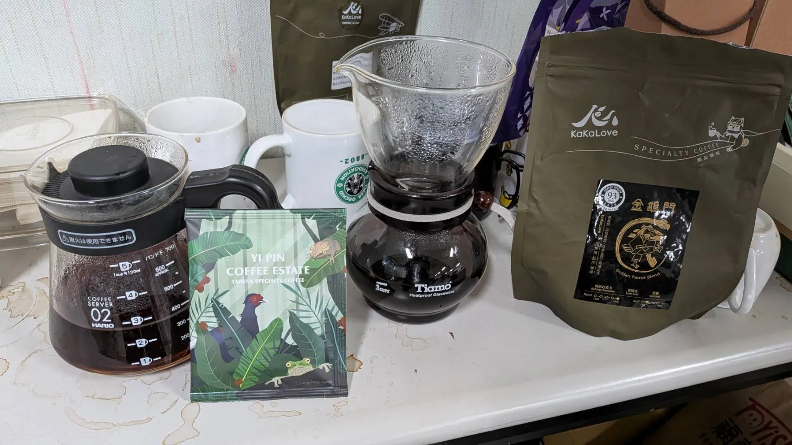

距離 8 月 8 日第 41 屆校友暨在校生聯合音樂會《為伍》愈來愈近，7 月 25 日的嘉中社辦也跟著熱鬧起來。校友陸續回到熟悉的團練室，和在校生一起打開樂器盒、架好譜架，把不同世代的聲音重新排進同一首樂曲裡。
團練當然要認真，但回到社辦的意義從來不只是一個拍子、一段旋律。有人和好久不見的夥伴聊聊近況，有人陪學弟妹對譜，有人在休息時靠近咖啡桌喘口氣；笑聲、樂器聲和手沖咖啡的香氣混在一起，讓普通的週末晚上又有了熟悉的嘉中味。
回來，就是這場聯演最重要的聲部
一年一度的校友聯演，舞台上需要一起演奏的人，舞台下也需要回來相聚的人。你可以帶著樂器加入合奏，也可以只是回社辦看看、陪大家坐一會兒；不用擔心太久沒吹、曲目不熟，或今年沒有安排上台。只要推開門，熟悉的夥伴和在校生都會很開心看到你。
7 月 25 日社辦團練
- 活動日期：2026 年 7 月 25 日（六）
- 活動地點：嘉義高中管樂社社團辦公室
- 共同參與：嘉中管樂校友與在校生
- 年度演出：8 月 8 日第 41 屆《為伍》校友暨在校生聯合音樂會
接下來的每一次團練，都歡迎校友隨時回來。不管你今年會不會站上舞台、不管手上的樂器多久沒有打開，只要有空，就回來聽聽社辦裡的聲音、看看學弟妹，也和老朋友再坐到一起。這場一年一度的重要活動，從來不只屬於演出名單上的人，而是屬於每一位願意回來的嘉中管樂人。
本文依 2026 年 7 月 25 日社辦團練公開影像與經確認的活動背景整理；完整影像館需社員登入後查看。